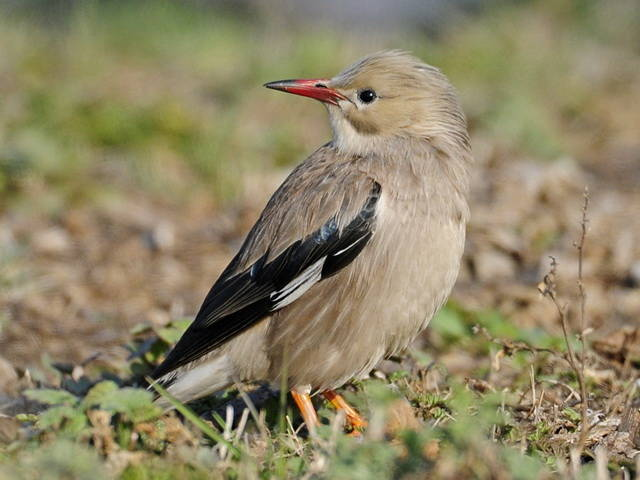
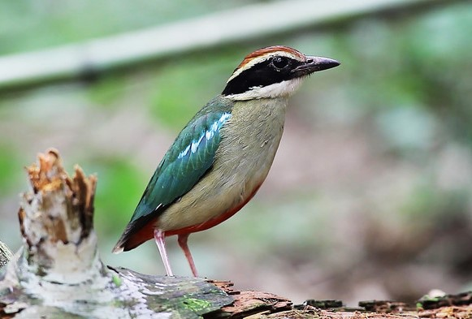
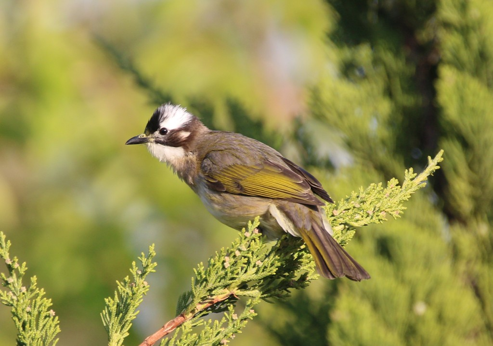
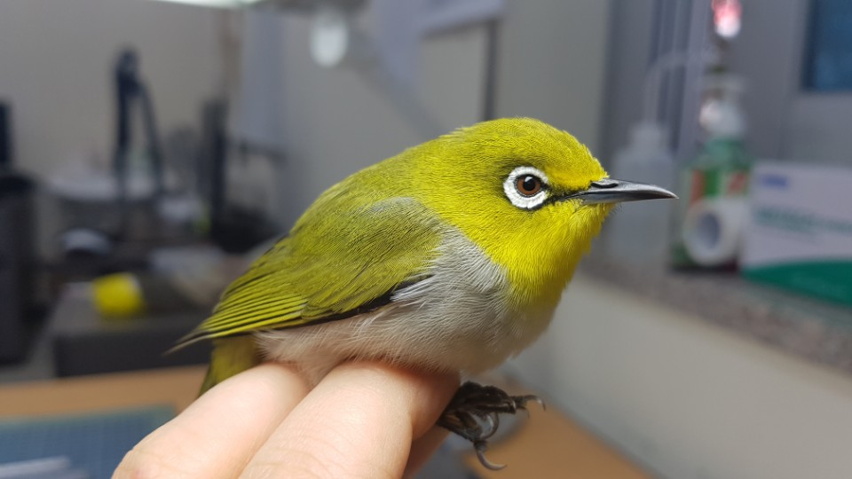
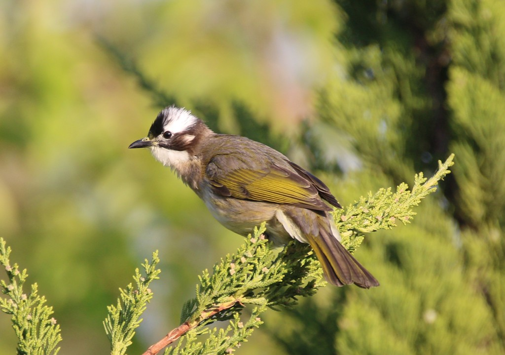
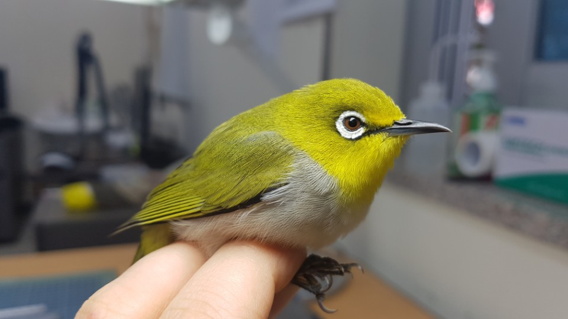
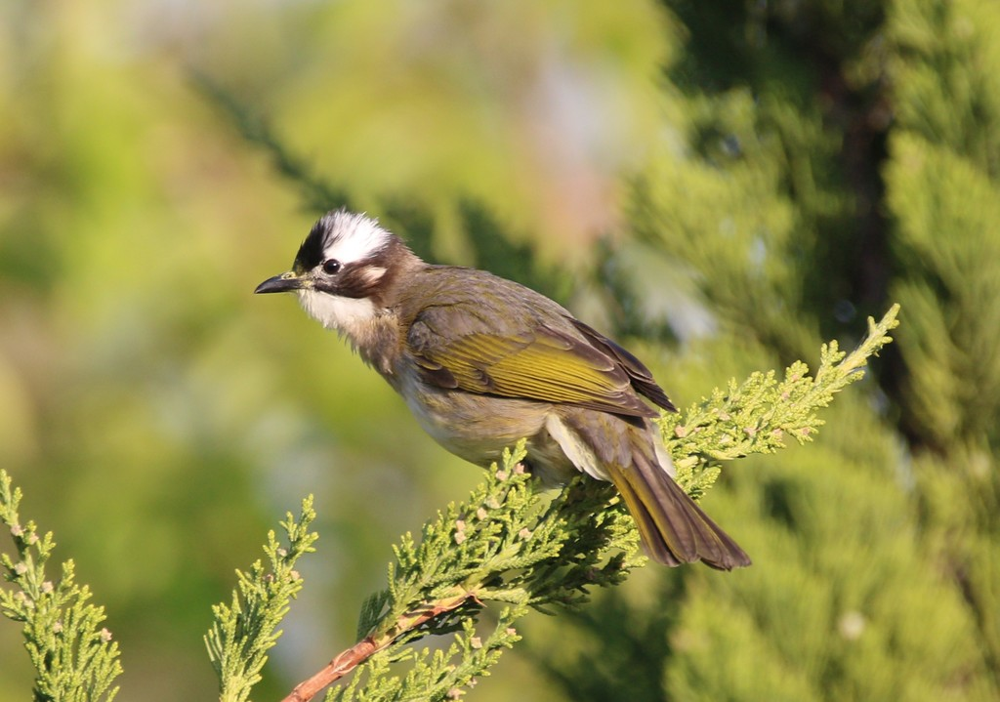
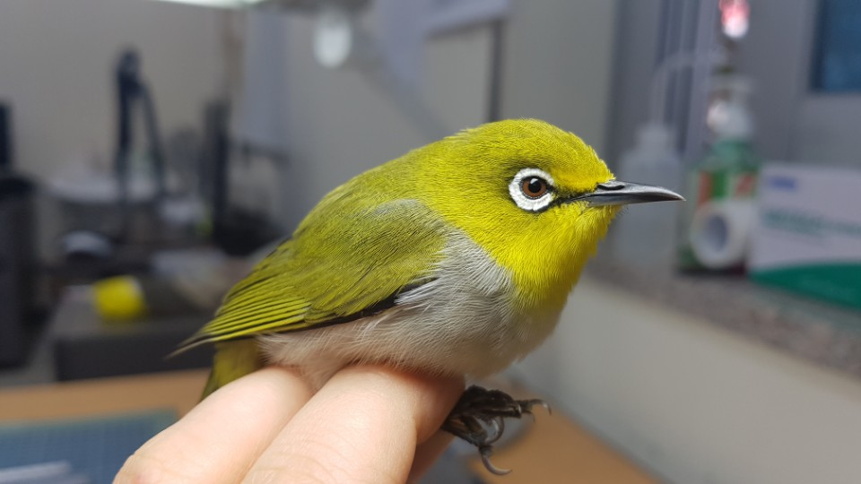

사이트 소개
조류 생태계 변화
기후변화 생물지표종
보호방안
기후변화 생물지표종이란?
기후변화로 인해 생물이 계절에 따라 활동, 분포역, 개체군 크기 변화 등이 뚜렷하거나 뚜렷할 것으로 예상되어
이를 지표화하여 정부에서 조사·관리가 필요한 생물종을 말한다. 조류, 양서류, 어류, 곤충, 균류, 관속식물 등 다양한 종류의 생물종이 지정되어 있다.




 


